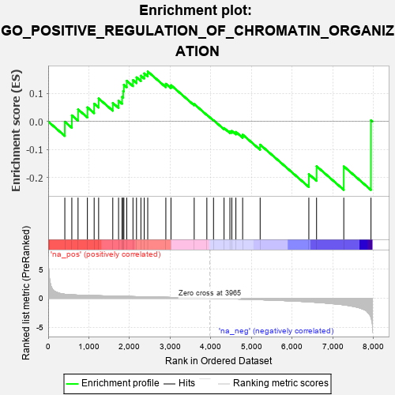
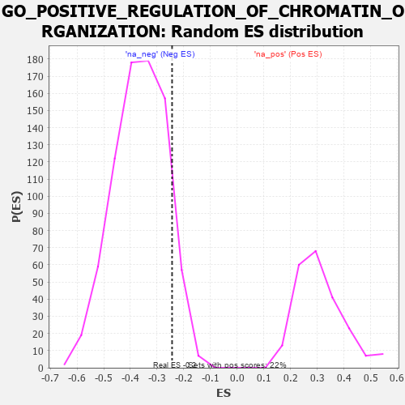

| | | Dataset | 7d |
| Phenotype | NoPhenotypeAvailable |
| Upregulated in class | na_neg |
| GeneSet | GO_POSITIVE_REGULATION_OF_CHROMATIN_ORGANIZATION |
| Enrichment Score (ES) | -0.24373516 |
| Normalized Enrichment Score (NES) | -0.6673585 |
| Nominal p-value | 0.9076923 |
| FDR q-value | 1.0 |
| FWER p-Value | 1.0 |
Table: GSEA Results Summary

Fig 1: Enrichment plot: GO_POSITIVE_REGULATION_OF_CHROMATIN_ORGANIZATION
Profile of the Running ES Score & Positions of GeneSet Members on the Rank Ordered List
| PROBE | GENE SYMBOL | GENE_TITLE | RANK IN GENE LIST | RANK METRIC SCORE | RUNNING ES | CORE ENRICHMENT | | 1 | EED | | | 409 | 0.690 | -0.0008 | No |
| 2 | CCNB1 | | | 581 | 0.601 | 0.0219 | No |
| 3 | WDR61 | | | 734 | 0.549 | 0.0431 | No |
| 4 | CTR9 | | | 964 | 0.492 | 0.0504 | No |
| 5 | KMT2A | | | 1130 | 0.458 | 0.0632 | No |
| 6 | KAT7 | | | 1240 | 0.440 | 0.0819 | No |
| 7 | PAF1 | | | 1588 | 0.376 | 0.0658 | No |
| 8 | KMT2E | | | 1730 | 0.350 | 0.0738 | No |
| 9 | FMR1 | | | 1816 | 0.334 | 0.0876 | No |
| 10 | RTF1 | | | 1844 | 0.329 | 0.1084 | No |
| 11 | SMAD4 | | | 1860 | 0.326 | 0.1305 | No |
| 12 | TASOR | | | 1931 | 0.316 | 0.1448 | No |
| 13 | SART3 | | | 2084 | 0.293 | 0.1472 | No |
| 14 | MORC2 | | | 2171 | 0.281 | 0.1570 | No |
| 15 | NSD3 | | | 2279 | 0.263 | 0.1629 | No |
| 16 | SIN3A | | | 2361 | 0.251 | 0.1711 | No |
| 17 | KDM1A | | | 2447 | 0.237 | 0.1778 | No |
| 18 | WDR5 | | | 2892 | 0.168 | 0.1342 | No |
| 19 | BRD7 | | | 3018 | 0.147 | 0.1293 | No |
| 20 | MAPK3 | | | 3589 | 0.062 | 0.0620 | No |
| 21 | NIPBL | | | 3900 | 0.010 | 0.0237 | No |
| 22 | TAL1 | | | 4064 | -0.018 | 0.0045 | No |
| 23 | CTBP1 | | | 4323 | -0.064 | -0.0232 | No |
| 24 | LRRK2 | | | 4467 | -0.087 | -0.0348 | No |
| 25 | SNW1 | | | 4514 | -0.096 | -0.0335 | No |
| 26 | GATA3 | | | 4614 | -0.120 | -0.0371 | No |
| 27 | WBP2 | | | 4780 | -0.153 | -0.0467 | No |
| 28 | ATM | | | 5210 | -0.249 | -0.0824 | No |
| 29 | UBE2N | | | 6407 | -0.621 | -0.1874 | Yes |
| 30 | TPR | | | 6597 | -0.709 | -0.1591 | Yes |
| 31 | CDK9 | | | 7266 | -1.138 | -0.1596 | Yes |
| 32 | ARRB1 | | | 7935 | -3.377 | 0.0045 | Yes |
Table: GSEA details [plain text format]

Fig 2: GO_POSITIVE_REGULATION_OF_CHROMATIN_ORGANIZATION: Random ES distribution
Gene set null distribution of ES for GO_POSITIVE_REGULATION_OF_CHROMATIN_ORGANIZATION